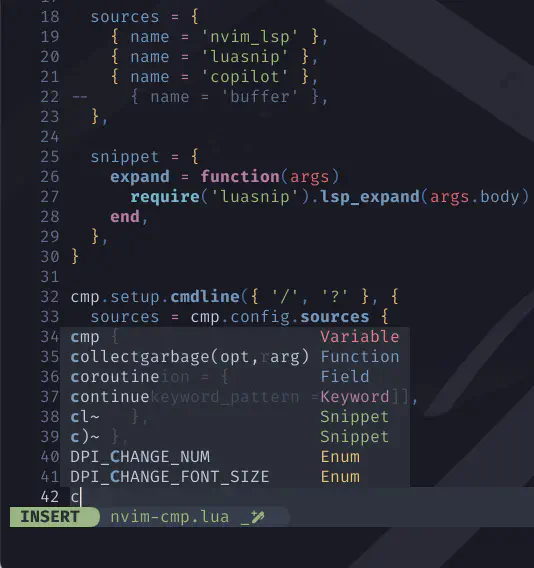
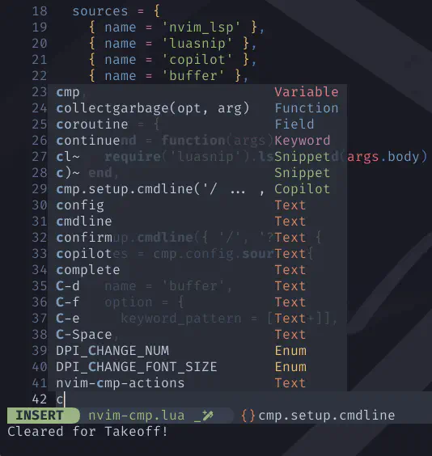
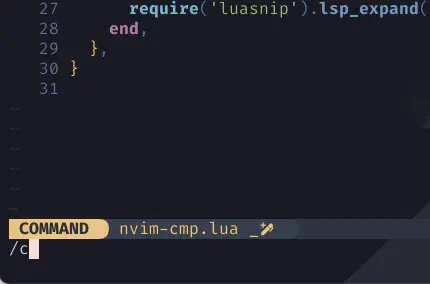
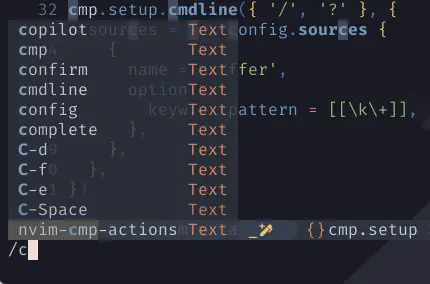
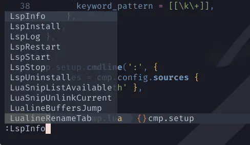
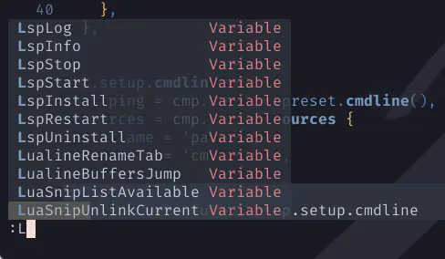
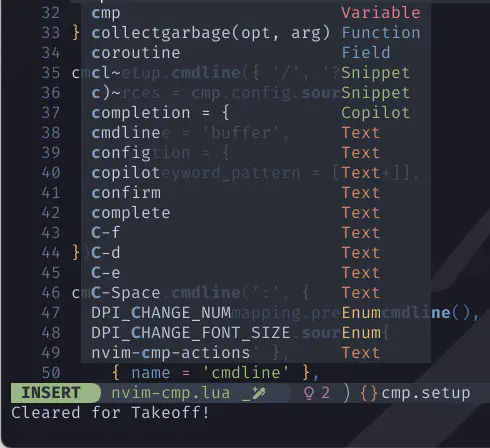
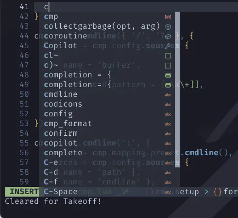

nvim-cmp source(s)
長かったような...、短かったような...。
ついにこのメドレーもフィナーレの時❗
Oh yeah, alright
Are you going to be in my dreams
あーそうだね、いいよ
きみは僕の夢に出てくるんだろ
Tonight? 1
今夜？
source for...
駆け抜けろ❗一気に😆
Love you, love you 2
Love you, love you...
cmp-buffer
nvim-cmp source for buffer words.
バッファ内単語の nvim-cmp ソース。
use {
'hrsh7th/nvim-cmp',
config = function() require 'extensions.nvim-cmp' end,
requires = {
'hrsh7th/cmp-nvim-lsp',
+ 'hrsh7th/cmp-buffer',
(中略)
}
}
sources = {
{ name = 'nvim_lsp' },
{ name = 'luasnip' },
{ name = 'copilot' },
+ { name = 'buffer' },
},
| before | after |
|---|---|
|  |  |
cmp.setup {
(中略)
}
+cmp.setup.cmdline({ '/', '?' }, {
+ sources = cmp.config.sources {
+ {
+ name = 'buffer',
+ option = {
+ keyword_pattern = [[\k\+]],
+ },
+ },
+ },
+})
Default: [[\%(-\?\d\+\%(\.\d\+\)\?\|\h\w*\%([\-.]\w*\)*\)]]
A vim's regular expression for creating a word list from buffer content.
バッファの内容から単語リストを作成するためのvimの正規表現。
You can set this to [[\k\+]] if you want to use the iskeyword option for recognizing words.
Lua's [[ ]] string literals are particularly useful here to avoid escaping all of the backslash
(\) characters used for writing regular expressions.
iskeywordオプションを使って単語を認識したい場合は、これを[[\k\+]]に設定します。
Luaの[[ ]]文字列リテラルは、正規表現の記述に使用されるバックスラッシュ(\) のエスケープを回避するために特に有用です。
| before | after |
|---|---|
|  |  |
cmp-cmdline
nvim-cmp source for vim's cmdline.
vim の cmdline 用 nvim-cmp ソース。
use {
'hrsh7th/nvim-cmp',
config = function() require 'extensions.nvim-cmp' end,
requires = {
'hrsh7th/cmp-nvim-lsp', 'hrsh7th/cmp-buffer',
+ 'hrsh7th/cmp-cmdline',
(中略)
}
}
+cmp.setup.cmdline(':', {
+ mapping = cmp.mapping.preset.cmdline(),
+ sources = cmp.config.sources {
+ { name = 'cmdline' },
+ },
+})
cmp.setup.cmdline({ '/', '?' }, {
+ mapping = cmp.mapping.preset.cmdline(),
sources = cmp.config.sources {
{
name = 'buffer',
option = {
keyword_pattern = [[\k\+]],
},
},
},
})
| before | after |
|---|---|
|  |  |
cmp-path
nvim-cmp source for filesystem paths.
ファイルシステムパス用の nvim-cmp ソース。
use {
'hrsh7th/nvim-cmp',
config = function() require 'extensions.nvim-cmp' end,
requires = {
'hrsh7th/cmp-nvim-lsp', 'hrsh7th/cmp-buffer', 'hrsh7th/cmp-cmdline',
+ 'hrsh7th/cmp-path',
(中略)
}
}
cmp.setup {
(中略)
sources = {
{ name = 'nvim_lsp' },
{ name = 'luasnip' },
{ name = 'copilot' },
{ name = 'buffer' },
+ { name = 'path' },
},
(中略)
}
cmp.setup.cmdline(':', {
sources = cmp.config.sources {
{ name = 'cmdline' },
+ { name = 'path' },
},
})
lspkind.nvim
This tiny plugin adds vscode-like pictograms to neovim built-in lsp:
この小さなプラグインは、neovim の内蔵 lsp に vscode のような絵文字を追加します：
use {
'hrsh7th/nvim-cmp',
config = function() require 'extensions.nvim-cmp' end,
requires = {
'hrsh7th/cmp-nvim-lsp', 'hrsh7th/cmp-buffer', 'hrsh7th/cmp-path', 'hrsh7th/cmp-cmdline',
+ 'onsails/lspkind-nvim',
(中略)
}
}
cmp.setup {
-- (中略)
formatting = {
format = require('lspkind').cmp_format {
mode = 'symbol',
preset = 'codicons',
},
},
}
Highlighting & icon (copilot-cmp)
Copilot's cmp source now has a builtin highlight group CmpItemKindCopilot.
To add an icon to copilot for lspkind, simply add copilot to your lspkind symbol map.
Copilot の cmp ソースに、組み込みのハイライトグループCmpItemKindCopilotが追加されました。
lspkind の copilot にアイコンを追加するには、lspkind のシンボルマップに copilot を追加するだけです。
Alternatively, you can add Copilot to the lspkind symbol_map within the cmp format function.
または、cmp フォーマット関数内で lspkind symbol_mapに Copilot を追加することもできます。
cmp.setup {
-- (中略)
formatting = {
format = require('lspkind').cmp_format {
mode = 'symbol',
preset = 'codicons',
+ symbol_map = { Copilot = '' },
},
},
}
| before | after |
|---|---|
|  |  |
The End
And in the end 3
結局のところ
実は、まだ自分で描いたロードマップを踏破できてないんですね〜🙀
copilotは当初の予定に無かったから、これでちょっと足りなくなっちゃったよね❗haha😆
...まあ、そもそも行き当たりばったりでずーっとやらせてもろ〜てますけど❤️
ぶっちゃけ "順番間違えたなー" とは思ってますが、ちゃんと落とし前はつけます。
つまり、もうちょっとだけ続く❗
続くったら続く... 🐅 🦍 🐘 🦒
Her Majesty 5 was a pretty nice girl
But she doesn't have was a lot to say
陛下はとても素敵な女性だった
多くは語らなかったけどね
1: Ringo は「ソロを面白いと思ったことは一度もない」と語るなど、ドラムソロを嫌っていて拒否したが、 「Martin に説得された。僕が叩いている間、彼がずっと数を数えていた。時間を稼がなくちゃならなかったんだ。 なのに長さが 13 小節だったから、僕は妙なタイミングで切り上げることになった。 とにかく僕はソロを叩いたし、これはあくまで特例だ。やり終えた今は満足してるけどね」と語っている。
2: Paul、George、John は3つの2小節のギター・ソロを持ち回りで演奏している。 このセクションの上にギター・インストゥルメンタルを置くというアイデアは George のもので、 John は3人がそれぞれセクションを演奏することを提案した。
The Beatles のレコーディング・エンジニア、Geoff Emerick は後にこう回想している: 「John、Paul、George の3人は、まるでタイムスリップして少年に戻ったかのように純粋に楽しんで一緒に演奏していた。 何よりも、ギターを構え、険しい目つきで決意を固め、互いを打ち負かそうとする姿はガンマンたちを思わせた。 しかし、敵意や緊張感はまったくなく、ただ楽しんでいるのが伝わってきた」。
3: The End (by The Beatles): Paul McCartney が作曲し、Lennon-McCartney とクレジットされている。 4人のビートルズによってレコーディングされた最後の曲であり、アルバムの Side-two の大部分を占めるメドレーの最後の曲である。 Ringo Starr が録音した数少ないドラム・ソロをフィーチャーしている。
4: McCartney は、「メドレーをちょっと意味のある連句で締めたかったから、Shakespeare を追求して書いた」とコメントしている。 「見ろ、Paul だって書こうと思えばこういう哲学的な歌詞が書けるんだ」と Lennon は皮肉混じりに称賛した。 Wikipediaより
5: 歌詞を少しだけ改変してますが、これはもちろん Her Majesty です😅 Her Majesty (by The Beatles): The End の14秒後に収録されているが、 オリジナルのスリーブには記載されていなかったため、シークレットトラックの最初の例だとも考えられている。 Wikipediaより